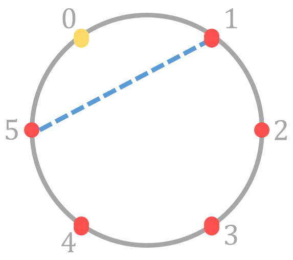
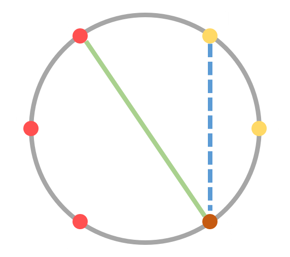

尚未完成
2020.03
G 是非空集合，且二元运算满足：
若满足交换律，则为交换群
设 (G, \cdot) 为群，A 是 G 的子集，若 (A, \cdot) 成群，则称 A 为 G 的子群，记作 A \le G；
一个集合的置换即从该集合映射至自身的双射。
\sigma = \left(\begin{array}{c} 1 & 2 & \dots & n \\ \sigma(1) & \sigma(2) & \dots & \sigma(n) \end{array}\right)
复合运算: (f \circ g)(x) = f(g(x))
\left(\begin{array}{c} a_1 & a_2 & \dots & a_n \\ a_2 & a_3 & \dots & a_1 \end{array}\right) \xRightarrow{\text{记作}} (a_1 \enspace a_2 \enspace \dots \enspace a_n)
\left(\begin{array}{c} 1 & 2 & 3 & 4 & 5 & 6 \\ 3 & 1 & 2 & 5 & 4 & 6 \end{array}\right) = (1 \enspace 3 \enspace 2) \cdot (4 \enspace 5) \cdot (6)
\begin{aligned} \sigma & = \left(\begin{array}{c} a_1 & a_2 & \dots & a_{j - 1} & a_j & \dots \\ a_2 & a_3 & \dots & a_j & a_1 & \dots \end{array}\right) \\ & = (a_1 \enspace a_2 \enspace \dots \enspace a_j) \cdot \left(\begin{array}{c} \dots \\ \dots \end{array}\right) = \dots \end{aligned}
递归进行下去，可得到：
\sigma = (a_1 \enspace \dots \enspace a_j) \cdot (a_{j + 1} \enspace \dots \enspace a_e) \cdots (a_r \enspace \dots \enspace a_n)
借助反证法证明其唯一性，若它还可被表示成：
\sigma = (b_1 \enspace \dots \enspace b_i) \cdot (b_{i + 1} \enspace \dots \enspace b_t) \cdots (b_s \enspace \dots \enspace b_n)
若存在两个轮换交集不为空，那么较大者一定还可以被进一步分解。
(1 \enspace 2 \enspace 3 \enspace 4 \enspace 5 \enspace 6)
\begin{aligned} & (1 \enspace 2 \enspace 3 \enspace 4 \enspace 5 \enspace 6)^2 \\ & = (1 \enspace 3 \enspace 5) \cdot (2 \enspace 4 \enspace 6) \end{aligned}
\begin{aligned} & (1 \enspace 2 \enspace 3 \enspace 4 \enspace 5 \enspace 6)^3 \\ & = (1 \enspace 4) \cdot (2 \enspace 5) \cdot (3 \enspace 6) \end{aligned}
\begin{aligned} & (1 \enspace 2 \enspace 3 \enspace 4 \enspace 5 \enspace 6)^4 \\ & = (1 \enspace 5 \enspace 3) \cdot (2 \enspace 6 \enspace 4) \end{aligned}
若置换 T 可表示为 1 个长度为 n 的轮换 c，可用如下算法求出 T^e 轮换乘积形式：
n 个元的所有置换，在复合运算 \circ 下成群，称作 n 元对称群 S_n
设 G 是一个群，M 是一个集合。若 G 中每个元 \sigma 都对应于 M 的一个变换，对 \forall a \in M 记变换结果为 \sigma \circ m，且满足：
则称 G 在 M 上有群作用。
待补充……
设有限群 G 作用于有限集 X 上，则轨道数：
|X/G| = \frac{1}{|G|} \sum\limits_{g \in G} |X^{g}|
其中 X^{g} 代表 g 的不动元构成的集合：
X^{g} = \{ x \in X \mid g \circ x = x \}
对正六边形的 6 个顶点，一半涂黑色一半涂白色。若经过旋转可相互得到的方案算同一种方案，求染色方案数？
M = \text{所有涂色方案， 共：} \binom{6}{3} = 20 \text{ 种}
G = \{ 0^\circ, 60^\circ, 120^\circ, 180^\circ, 240^\circ, 300^\circ \} \\ \text{（绕中心顺时针旋转）}
记 6 个顶点分别为 A_1, A_2, \dots, A_6。
\left(\begin{array}{c} A_1 & A_2 & A_3 & A_4 & A_5 & A_6 \\ A_1 & A_2 & A_3 & A_4 & A_5 & A_6 \end{array}\right)
将这一置换作用于 M 中的任意元素都不会使该元素发生变化，故不动元有 20 个。
\left(\begin{array}{c} A_1 & A_2 & A_3 & A_4 & A_5 & A_6 \\ A_6 & A_1 & A_2 & A_3 & A_4 & A_5 \end{array}\right)
若要成为不动元，则应当满足：
A_1 = A_2 = \dots = A_6
故没有不动元
\left(\begin{array}{c} A_1 & A_2 & A_3 & A_4 & A_5 & A_6 \\ A_5 & A_6 & A_1 & A_2 & A_3 & A_4 \end{array}\right)
若要成为不动元，则应当满足：
A_1 = A_3 = A_5, \ A_2 = A_4 = A_6
故不动元数量为 2
\left(\begin{array}{c} A_1 & A_2 & A_3 & A_4 & A_5 & A_6 \\ A_4 & A_5 & A_6 & A_1 & A_2 & A_3 \end{array}\right)
若要成为不动元，则应当满足：
A_1 = A_4, \ A_2 = A_5, \ A_3 = A_6
故没有不动元
由于顺时针和逆时针旋转是等价的，因此：
轨道数：\frac{1}{6}(20 + 2 + 2) = 4
|X^{g}| = m^{c(g)}, \ |X/G| = \frac{1}{|G|} \sum\limits_{g \in G} m^{c(g)}
长为 n 的环，m 种颜色对环上元素染色，经旋转或翻转都算作相同方案
n, m \le 10^9
G = \{ \frac{2\pi}{n}, \dots, (n - 1)\frac{2\pi}{n}, 2\pi \}
旋转 i \cdot \frac{2\pi}{n} 时，可拆成 \gcd(n, i) 个轮换，故：
\sum\limits_{g \in G} |X^g| = \sum\limits_{i = 1}^{n} m^{\gcd(n, i)}
\begin{aligned} \sum\limits_{g \in G} |X^g| & = \sum\limits_{i = 1}^{n} m^{\gcd(n, i)} \\ & = \sum\limits_{d \mid n} m^d \sum\limits_{i = 1}^{n} [ \gcd(n, i) = d ] \\ & =\sum\limits_{d \mid n} m^d \sum\limits_{i = 1}^{n} [ \gcd(\frac{n}{d}, i) = 1 ] \\ & = \sum\limits_{d \mid n} m^d \cdot \varphi(\frac{n}{d}) \end{aligned}
复杂度变成了 \mathcal{O}(\sqrt{N})
|G'| = n
|X/G| = \frac{1}{|G| + |G'|} (\sum\limits_{g \in G} |X^g| + \sum\limits_{g' \in G'} |X^{g'}|)
n 个点无向完全图，m 种颜色给边染色，求互不同构无向完全图个数。
n \le 60, \ m \le 10^3
两点在同一轮换里的边：记点轮换大小为 x，则可构成 \left\lfloor \frac{x}{2} \right\rfloor 个边轮换。
考虑 x 个点构成的完全图，将点等距离放在圆周上，则显然长度相等的线段构成一个边轮换，共 \left\lfloor \frac{x}{2} \right\rfloor 个。
两点在不同轮换里的边：记点轮换大小分别为 x, y，则可构成 \gcd(x, y) 个边轮换。
需要移 \text{lcm}(x, y) 次才能转回原图形，发现每个轮换大小均为 \text{lcm}(x, y)。共 xy 条边，则轮换个数 \frac{xy}{\text{lcm}(x, y)} = \gcd(x, y) 个。
现要从 4 种不同的水晶中取 n 个围成一个圈，但有 m 个限制条件：每条限制条件要求某四种水晶不能在围成的圈中连续出现。通过旋转可互相得到的方案算作一种方案，问有多少种本质不同的方案？（结果模 998244353）
n \le 10^5, m \le 256
dp\langle i, j, k, l \rangle = \sum\limits_{s} dp \langle i - 1, s, j, k \rangle \cdot a \langle s, j, k, l \rangle
\begin{aligned} \begin{bmatrix} dp \langle i, 1, 1, 1 \rangle \\ dp \langle i, 1, 1, 2 \rangle \\ \vdots \\ dp \langle i, 4, 4, 4 \rangle \end{bmatrix} \end{aligned} = \begin{aligned} \begin{bmatrix} dp \langle i - 1, 1, 1, 1 \rangle \\ dp \langle i - 1, 1, 1, 2 \rangle \\ \vdots \\ dp \langle i - 1, 4, 4, 4 \rangle \end{bmatrix} \end{aligned} \cdot T
T[\langle s, j, k \rangle][\langle j, k, l \rangle] = a \langle s, j, k, l \rangle
圆周上均匀分布 n 个点，现可连接若干点对，但要求连出的线段不可在圆内部相交（但可以在圆上相交）。经过旋转可相互得到的方案算作相同方案，有多少种本质不同方案数？（T 次询问，结果模 10^9 + 7）
T \le 10^5, 2 \le n \le 10^6
d = n 时的情形（即旋转 2\pi）：
2^n \cdot f(n)
首先考虑 0 号点没有连边的情况：

2 \cdot f(n - 1)
其次考虑 0 号点有连边的情况：

2 \cdot f(i) \cdot f(n - i + 1) \quad (i \ge 3)
综上所述
\begin{aligned} f(n) & = 2f(n - 1) \\ & + f(n - 1) + 2\sum\limits_{i = 3}^{n - 2} f(i) \cdot f(n - i + 1) \end{aligned}
d \neq n 的情形